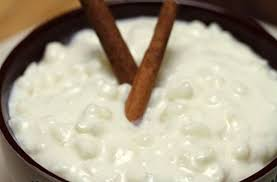

Receitas do nordeste
O melhor da culinaria nordestina você encontra aqui!
Mungunzá
Mungunzá é uma iguaria doce feita de grãos de milho-branco inteiros, cozidos em um caldo contendo leite de coco ou de vaca, açúcar, canela em pó ou casca e cravo-da-índia. O prato faz parte da culinária brasileira, onde é apreciado durante todo o ano, diferentemente de outras iguarias de milho, que são geralmente feitas no período junino. confira;
Mungunzá - foto/reprodução - wikipédia
Pamonha
Pamonha é um quitute brasileiro, comum nos estados do Nordeste e ainda em Goiás, Mato Grosso, Minas Gerais, Paraná, Rondônia, São Paulo e Tocantins. Provavelmente descende da culinária indígena. Confira;

Pamonha - foto/reprodução - wikipédia
Cuscuz
Cuscuz é um prato berbere originário do Magrebe (região do noroeste do continente africano).Consiste num preparado de sêmola de cereais, principalmente o trigo, quando a sêmola é amassada à mão com um pouco de água até se transformar em pequenos grãos que devem ser cozidos no vapor numa cuscuzeira e servidos com um molho que pode ter sido feito na parte inferior da cuscuzeira. Confira;

Cuscuz - foto/reprodução - wikipédia
Tapioca
A tapioca ou goma é o amido extraído da planta mandioca, usualmente preparada em forma granulada, sendo o ingrediente principal de algumas iguarias típicas do Brasil, como o beiju. Confira;

Tapioca - foto/reprodução - Sabor Brasil
Baião de Dois
Baião de dois é um prato tipico da região Nordeste. Consiste num preparado de arroz e feijão, de preferência o feijão verde ou feijão novo. É frequente adicionar-se queijo coalho e nata. Não se adiciona carne-seca no Ceará. Na Paraíba e em Pernambuco, existe um prato semelhante chamado rubacão, bastante apreciado no Sertão. Confira;

Baião de dois - foto/reprodução - wikipédia